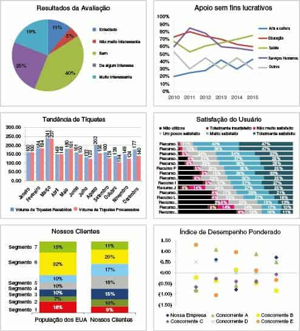
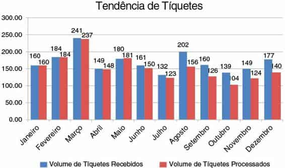
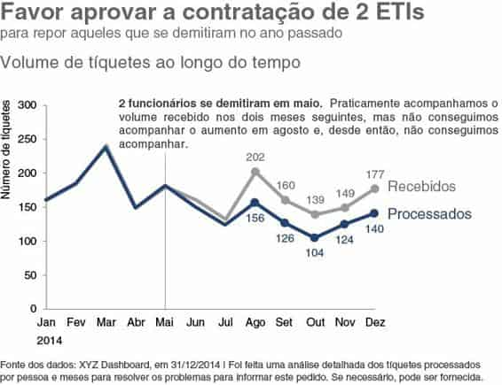
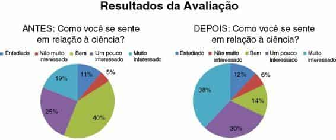
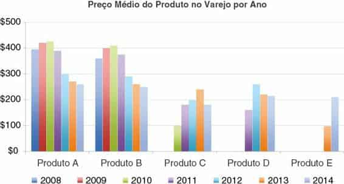
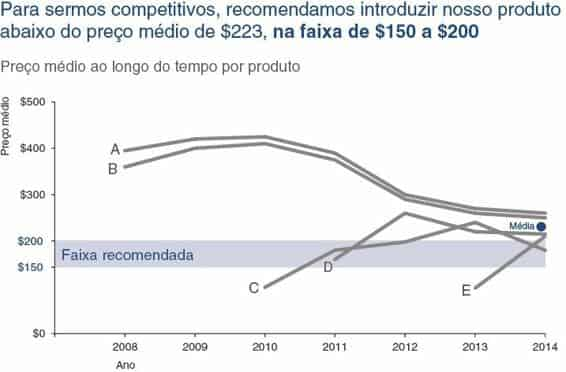

Já encontrei muitas apresentações desinteressantes em meu trabalho (e em minha vida — uma vez que você começa a reparar nisso, é difícil parar).
Ninguém quer fazer um gráfico ruim. Mas acontece. Repetidamente. Em todas as empresas de todos os setores, e por pessoas de todo tipo. Acontece na mídia. E em lugares onde não se esperaria que isso acontecesse. Por que isso acontece?

FIGURA 0.1 Exemplos de gráficos ineficientes
Na escola, aprendemos muito sobre linguagem e matemática. Na linguagem, aprendemos a formar frases e histórias com as palavras. Na matemática, aprendemos a entender os números. Mas raramente os dois lados se juntam: não nos ensinam a contar histórias com números. E bem poucas pessoas se sentem naturalmente competentes nisso. Somos mal preparados para uma importante tarefa, cada vez mais exigida. A tecnologia permitiu acumular volumes de dados cada vez maiores e há um também crescente desejo associado de entendê-los.
Na falta de habilidades naturais ou prática, contamos com nossas ferramentas para entender as melhores práticas. Hoje, quase qualquer pessoa pode inserir dados em um aplicativo (por exemplo, o Excel) e criar um gráfico. Vou repetir, pois isso é importante: qualquer pessoa pode inserir dados em um aplicativo e criar um gráfico. Isso é notável, considerando que, historicamente, o processo de criação de um gráfico era reservado aos cientistas ou a outras funções altamente técnicas. Também é assustador, pois, sem um caminho claro a seguir, as melhores intenções (combinadas com padrões de ferramenta frequentemente questionáveis) podem levar a direções bem ruins: 3D, cores sem sentido, gráficos de pizza.
Conhecer aplicativos de processamento de texto, planilhas e software de apresentação — que faziam a diferença em um currículo e no trabalho — tornou-se requisito mínimo para a maioria dos empregadores. Um recrutador me disse que, hoje, saber o “pacote Office” não é suficiente: é o que fazemos a mais que nos destaca. Saber contar histórias com dados é uma vantagem e leva ao sucesso em praticamente qualquer função.
Embora a tecnologia tenha aumentado o acesso e a proficiência em ferramentas para trabalhar com dados, ainda há lacunas nas habilidades. Você pode inserir alguns dados no Excel e criar um gráfico. Para muitos, a visualização de dados acaba aí. Isso pode estragar completamente uma história muito interessante ou, pior, torná-la difícil ou impossível de entender.
Há uma história em seus dados. Mas suas ferramentas não sabem qual é essa história. É aí que você entra — o analista ou comunicador da informação —
para dar vida à história, visualmente e contextualmente. Esse processo é o foco deste livro. A seguir há alguns exemplos de “antes e depois”, para dar uma ideia do que você aprenderá.
As lições que abordaremos o permitirão mudar de simplesmente mostrar dados para storytelling com dados.

FIGURA 0.2 Exemplo 1 (antes): apresentação de dados

FIGURA 0.3 Exemplo 1 (depois): storytelling com dados

FIGURA 0.4 Exemplo 2 (antes): apresentação de dados
FIGURA 0.5 Exemplo 2 (depois): storytelling com dados

FIGURA 0.6 Exemplo 3 (antes): apresentação de dados

FIGURA 0.7 Exemplo 3 (depois): storytelling com dados
Este livro foi escrito para qualquer pessoa que precise comunicar qualquer coisa a qualquer um usando dados. Isso inclui (mas certamente não está limitado a): analistas que compartilham os resultados de seus trabalhos, alunos que visualizam dados de teses, gerentes que precisam se comunicar utilizando dados, filantropos que precisam provar seu impacto e líderes ao informar sua diretoria. Acredito que qualquer pessoa pode melhorar sua capacidade de se comunicar eficientemente com dados. Este é um espaço assustador para muitos, mas não precisa ser.
Quando solicitam a você que “mostre dados”, quais sentimentos isso desperta?
Talvez você se sinta desconfortável por não saber por onde começar. Ou talvez sinta que é uma tarefa opressiva, porque presume que o que está criando precisa ser complicado e mostrar detalhes suficientes para responder a cada pergunta possível. Ou talvez já tenha uma base sólida nisso, mas está procurando algo que ajude a aprimorar seus gráficos e as histórias que você quer contar com eles. Em todos esses casos, este livro foi escrito tendo você em mente.
“Quando me pedem para mostrar os dados, eu me sinto...”
Uma pesquisa de opinião informal que realizei no Twitter revelou a seguinte mistura de emoções quando as pessoas são solicitadas a “mostrar os dados”.
Frustrado, porque achei que não seria capaz de contar a história toda.
Pressão para tornar claro a quem quer que precise dos dados.
Inadequado. Chefe: Você pode detalhar isso? Dê-me a divisão por x, y e z.
A capacidade de contar histórias com dados é uma habilidade ainda mais importante em nosso mundo de dados crescentes e de desejo de tomadas de decisão orientadas por dados. Uma visualização de dados eficaz pode significar a diferença entre o sucesso e o fracasso na hora de comunicar as constatações de seu estudo, levantar dinheiro para sua organização sem fins lucrativos, apresentar informações para seus diretores ou simplesmente mostrar sua ideia para seu público.
Em minha experiência, vi que a maioria das pessoas enfrenta um desafio semelhante: elas podem reconhecer a necessidade de se comunicar eficientemente com dados, mas não se acham qualificadas. É difícil encontrar pessoas habilidosas na visualização de dados. Parte do desafio é que a visualização de dados é uma singular etapa do processo analítico. As pessoas contratadas para funções analíticas normalmente têm conhecimentos quantitativos, adequados para as outras etapas (encontrar os dados, reuni-los, analisá-los, construir modelos), mas não necessariamente algum treinamento formal em design para ajudá-los na comunicação da análise — o qual, a propósito, normalmente é a única parte do processo que seu público vê. E, cada vez mais em nosso mundo sempre mais voltado a dados, mesmo quem não possui conhecimentos técnicos precisa colocar o chapéu analítico e se comunicar usando dados.
Os sentimentos de desconforto não são surpreendentes, dado que a capacidade de se comunicar eficientemente com dados não é algo ensinado tradicionalmente. Quem se sobressai normalmente aprendeu o que funciona e o que não funciona por meio de tentativa e erro. Esse processo pode ser longo e entediante. Com este livro, espero ajudar a torná-lo mais rápido para você.
Sempre fui atraída para essa área onde a matemática e os negócios se cruzam.
Minha formação é matemática e negócios, o que permite que eu me comunique eficientemente com os dois lados — que nem sempre falam a mesma língua — e os ajude a se entenderem melhor. Gosto de usar a ciência dos dados para informar melhor as decisões de negócio. Com o passar do tempo, descobri que um segredo para o sucesso é se comunicar de modo eficaz e visual com dados.
A primeira vez que reconheci a importância de ser hábil nessa área foi em meu primeiro trabalho depois da faculdade. Eu trabalhava como analista em administração de risco de crédito (antes da crise do subprime e, portanto, antes que qualquer um soubesse realmente o que era administração de risco de crédito). Meu trabalho era gerar e avaliar modelos estatísticos para prever fraude e perda. Isso significava pegar um material complicado e transformá-lo em uma comunicação simples, informando se tínhamos dinheiro suficiente para perdas esperadas, em quais cenários correríamos risco e assim por diante. Rapidamente, aprendi que gastar tempo na parte estética — algo que meus colegas normalmente não faziam — significava que meu trabalho obtinha mais atenção de meu chefe e do chefe do meu chefe. Foi assim que comecei a ver o valor da comunicação visual de dados.
Depois de passar por várias funções em risco de crédito, fraude e administração de operações, seguidas por algum tempo no mundo das participações privadas, decidi que queria continuar minha carreira fora dos bancos e das finanças. Fiz uma pausa para refletir sobre as habilidades que queria utilizar diariamente: usar dados para influenciar decisões de negócios.
Cheguei à Google, na equipe People Analytics. A Google é uma empresa voltada a dados — a ponto de usarem dados e análise em uma área em que são raramente vistos: recursos humanos. A People Analytics é uma equipe analítica incorporada ao RH da Google (referida como “People Operations”).
O mantra dessa equipe é ajudar a garantir que as decisões sobre pessoas na Google — sobre funcionários ou futuros funcionários — sejam orientadas por dados. Era um lugar maravilhoso para continuar a aprimorar minhas habilidades em storytelling com dados, usando dados e análise para entender e informar melhor a tomada de decisões em áreas como contratação direcionada, engajamento e motivação de funcionários, montagem de equipes eficientes e manutenção de talentos. A equipe People Analytics é moderna, e ajuda a formar um caminho que muitas outras empresas começaram a seguir.
Estar envolvida na montagem e no crescimento dessa equipe foi uma experiência incrível.
Um projeto em particular que teve destaque na esfera pública foi a pesquisa Project Oxygen da Google, sobre o que torna um gerente excelente. Este trabalho foi descrito no New York Times e é a base de um conhecido estudo de caso da Harvard Business Review. Foi um desafio comunicar as constatações para públicos variados, desde engenheiros que, às vezes, eram céticos em relação à metodologia e queriam se aprofundar nos detalhes, até gerentes querendo entender o quadro geral das descobertas e como usá-las. Meu envolvimento no projeto foi na parte da comunicação, ajudando a mostrar material às vezes muito complicado de uma maneira que acalmasse os engenheiros e seu desejo por detalhes, e que ainda fosse compreensível e direto para gerentes e vários níveis de liderança. Para fazer isso, aproveitei muitos dos conceitos que discuto neste livro.
O momento decisivo aconteceu quando estávamos elaborando um programa de treinamento interno na equipe People Operations na Google e me pediram para desenvolver conteúdo sobre visualização de dados. Isso me deu a oportunidade de pesquisar e começar a aprender os princípios por trás da visualização eficaz de dados, ajudando-me a compreender por que algumas das coisas, que aprendi por tentativa e erro com o passar dos anos, tinham sido eficazes. Com essa pesquisa, desenvolvi um curso sobre visualização de dados que, no fim das contas, foi realizado para toda a Google.
O curso gerou certa agitação, tanto dentro como fora da Google. Graças a uma série de acontecimentos fortuitos, recebi convites para palestras em algumas organizações filantrópicas e em eventos sobre visualização de dados.
A fama se espalhou. Cada vez mais pessoas estavam estendendo as mãos para mim — inicialmente, no mundo filantrópico, mas cada vez mais também no setor corporativo — procurando orientações sobre como se comunicar eficientemente com dados. Tornou-se cada vez mais claro que a carência nessa área não era exclusividade da Google. Mais exatamente, quase qualquer pessoa em uma organização ou ambiente empresarial podia aumentar seu impacto sendo capaz de se comunicar eficientemente com dados. Depois de atuar como palestrante em conferências e organizações em meu tempo livre, finalmente saí da Google para realizar meu objetivo emergente de ensinar o mundo a contar histórias com dados.
Nos últimos anos, dei workshops para mais de 100 organizações nos Estados Unidos e na Europa. Foi interessante ver que a necessidade de habilidades nessa área abrange muitos setores e funções. Tive públicos nas áreas de consultoria, produtos para o consumidor, educação, serviços financeiros, governo, sistemas de saúde, entidades sem fins lucrativos, varejo, startups e tecnologia. Meus públicos têm sido uma mistura de funções e níveis: desde analistas que trabalham com dados diariamente até os que não estão em funções analíticas, mas ocasionalmente precisam incorporar dados em seus trabalhos, desde gerentes que precisam fornecer orientações e feedback até equipes executivas apresentando resultados trimestrais para os diretores.
Por meio desse trabalho, fui exposta a muitos e diversos desafios. Percebo que as habilidades necessárias nessa área são fundamentais. Elas não são específicas de nenhum setor ou função, e podem ser ensinadas e aprendidas eficientemente — conforme demonstrado pelo consistente retorno positivo e acompanhamentos que recebo dos participantes dos workshops. Com o passar do tempo, codifiquei as lições que ensino em meus workshops. São estas lições que compartilho com você.
Em meus workshops, normalmente me concentro em cinco lições principais.
A grande oportunidade com este livro é que não há limite de tempo (como acontece em um ambiente de workshop). Incluí uma sexta lição de bônus que sempre quis compartilhar (“pense como um designer”) e também muito mais, por meio de exemplos de “antes e depois”, instruções passo a passo e ideias de meu processo de pensamento sobre o design visual da informação.
Fornecerei orientações práticas que você pode começar a usar imediatamente para melhor se comunicar visualmente com dados. Vamos abordar conteúdo para ajudá-lo a aprender e se sentir à vontade empregando seis lições importantes:
1. Entenda o contexto
2. Escolha uma apresentação visual adequada
3. Elimine a saturação
4. Foque a atenção onde você deseja
5. Pense como um designer
6. Conte uma história
Ao longo do livro, utilizo vários estudos de caso para ilustrar os conceitos discutidos. As lições que abordaremos não serão específicas de um setor — ou função —, mas vamos enfocar conceitos fundamentais e as melhores práticas para a comunicação eficaz com dados. Como meu trabalho abrange muitos setores, o mesmo acontece com os exemplos que uso. Você verá estudos de caso de tecnologia, educação, produtos para o consumidor, do setor sem fins lucrativos e muito mais.
Cada exemplo usado tem por base uma lição que ensinei em meus workshops, mas em muitos casos alterei um pouco os dados ou generalizei a situação para proteger informações confidenciais.
Se algum exemplo inicialmente não parecer relevante para você, sugiro fazer uma pausa e pensar sobre quais desafios de visualização ou comunicação de dados você encontra, onde uma estratégia semelhante poderia ser eficaz. Há algo a ser aprendido em cada exemplo, mesmo que o exemplo em si não esteja obviamente relacionado ao mundo no qual você trabalha.
As lições que abordaremos neste livro se concentram nas melhores práticas que podem ser aplicadas em qualquer aplicativo de geração de gráficos ou software de apresentação. Existe um enorme número de ferramentas que podem ser aproveitadas para contar histórias com dados eficientemente. No entanto, não importa o quão excelente seja a ferramenta, ela nunca conhecerá seus dados e sua história como você. Conheça bem sua ferramenta para que ela não se torne um fator limitante quando for a hora de aplicar as lições que abordamos neste livro.
Embora eu não concentre a discussão em ferramentas específicas, os exemplos deste livro foram criados com o Excel. Quem quiser ver com detalhes como apresentações semelhantes podem ser construídas no Excel, visite meu blog em storytellingwithdata.com, em inglês, onde os arquivos do Excel que acompanham meus posts podem ser baixados.
Este livro está organizado em uma série de lições abrangentes, com cada capítulo enfocando uma única lição básica e conceitos relacionados. Vamos discutir um pouco de teoria, quando auxiliar no entendimento, mas enfatizarei a aplicação prática da teoria, frequentemente por meio de exemplos específicos do mundo real. Você terminará cada capítulo pronto para aplicar a lição dada.
As lições do livro estão organizadas em ordem cronológica, da mesma maneira como penso sobre o processo de storytelling com dados. Por isso e porque os capítulos posteriores complementam e, em alguns casos, fazem referência a conteúdo anterior, recomendo lê-lo do início ao fim. Depois de fazer isso, você provavelmente consultará pontos específicos de interesse ou exemplos relevantes para os desafios de visualização de dados com que se deparar.
NOTA: Você poderá fazer o download das imagens em www.altabooks.com.br (Procure pelo título do livro).
Para dar uma ideia mais específica do caminho que tomaremos, resumos dos capítulos podem ser encontrados a seguir.
Capítulo 1: a importância do contexto
Antes de você tomar o caminho da visualização de dados, há duas perguntas que deve responder sucintamente: Quem é seu público? O que precisa que ele saiba ou faça? Este capítulo descreve a importância de entender o contexto circunstancial, incluindo o público, o mecanismo de comunicação e o tom desejado. Vários conceitos são apresentados e ilustrados por meio de exemplo para ajudar a garantir que o contexto seja completamente entendido.
Criar um entendimento sólido do contexto circunstancial reduz as iterações mais adiante e o coloca no caminho para o sucesso quando se trata de criar conteúdo visual.
Capítulo 2: a escolha de um visual eficaz
Qual é a melhor maneira de mostrar os dados que você deseja comunicar?
Analisei as apresentações visuais que mais uso em meu trabalho. Neste capítulo, apresento os tipos mais comuns de visuais usados para comunicar dados em um ambiente de negócios, discuto casos de uso apropriados para cada um e ilustro cada tipo por meio de exemplos do mundo real. Os tipos específicos de apresentações abordadas incluem texto simples, tabela, mapa de calor, gráfico de linhas, gráfico de inclinação, gráfico de barras verticais, gráfico de barras verticais empilhadas, gráfico de cascata, gráfico de barras horizontais, gráfico de barras horizontais empilhadas e gráfico de área quadrada. Também abordaremos os recursos visuais a serem evitados, incluindo os gráficos de pizza e de rosca, e discutiremos os motivos para evitar gráficos em 3D.
Capítulo 3: a saturação é sua inimiga!
Imagine uma página ou uma tela em branco: cada elemento adicionado a ela absorve carga cognitiva por parte de seu público. Isso significa que devemos ter discernimento acerca dos elementos que permitimos em nossa página ou tela e devemos trabalhar para identificar coisas que estão absorvendo poder do cérebro desnecessariamente e removê-las. Identificar e eliminar a saturação é o enfoque deste capítulo. Como parte dessa conversa, apresento e discuto os Princípios da Gestalt para Percepção Visual e como podemos aplicá-los em apresentações visuais de informação, como tabelas e gráficos.
Discutimos também o alinhamento, o uso estratégico do espaço em branco e o contraste como importantes componentes de um design criterioso. Vários exemplos são usados para ilustrar as lições.
Capítulo 4: focalize a atenção de seu público
Neste capítulo, continuamos a examinar como as pessoas veem e como você pode tirar proveito disso ao elaborar apresentações. Isso inclui uma breve discussão sobre visão e memória, que atuarão de forma a enfatizar a importância dos atributos pré-atentivos, como tamanho, cor e posição na página. Vamos explorar como os atributos pré-atentivos podem ser usados estrategicamente para ajudar a dirigir a atenção de seu público para onde você deseja que ele se concentre e para criar uma hierarquia visual dos componentes, a fim de ajudar a dirigir seu público para as informações que deseja comunicar, e da maneira como quer que sejam processadas. A cor como ferramenta estratégica é abordada em profundidade. Os conceitos são ilustrados por meio de vários exemplos.
Capítulo 5: pense como um designer
A forma segue a função. Esse ditado do design de produtos tem aplicação clara na comunicação com dados. Quando se trata da forma e da função de nossas visualizações de dados, primeiramente devemos pensar sobre o que queremos que nosso público consiga fazer com os dados (função) e criar uma visualização (forma) que permita fazer isso com facilidade. Neste capítulo, discutimos como os conceitos do design tradicional podem ser aplicados à comunicação com dados. Investigamos reconhecimentos de funcionalidades (affordances), acessibilidade e estética, explorando vários conceitos apresentados anteriormente, mas observando-os através de lentes um pouco diferentes. Discutimos também estratégias para obter aceitação do público para seus designs visuais.
Capítulo 6: dissecagem de modelos visuais
Muito pode ser aprendido a partir de um exame completo de apresentações visuais eficazes. Neste capítulo, examinamos cinco visuais exemplares e discutimos o processo de pensamento específico e as escolhas de design que levaram à sua criação, utilizando as lições abordadas até este ponto.
Exploramos as decisões a respeito do tipo de gráfico e a ordenação dos dados dentro da apresentação. Consideramos as escolhas em torno do quê e de como dar e retirar a ênfase, por meio do uso de cor, espessura de linhas e tamanho relativo. Discutimos o alinhamento e o posicionamento de componentes dentro dos visuais e também o uso eficiente de palavras em títulos, legendas e anotações.
Capítulo 7: lições sobre storytelling
Histórias repercutem e ficam conosco de maneiras que dados simplesmente não conseguem. Neste capítulo, apresento conceitos de storytelling que podem ser aproveitados na comunicação com dados. Consideramos o que pode ser aprendido com mestres do storytelling. Uma história tem início, meio e fim claros; discutimos como essa estrutura se aplica e pode ser usada na construção de apresentações de negócios. Abordamos estratégias para o storytelling eficaz, incluindo o poder da repetição, o fluxo da narrativa, considerações sobre narrativas faladas e escritas, e diversas táticas para garantir que nossa história seja claramente compreendida em nossas comunicações.
Capítulo 8: tudo reunido
Os capítulos anteriores incluíram aplicações fragmentadas para demonstrar as lições individuais abordadas. Neste capítulo amplo, acompanhamos o processo de storytelling com dados do início ao fim, usando um único exemplo do mundo real. Entendemos o contexto, escolhemos uma apresentação visual adequada, identificamos e eliminamos a saturação, chamamos a atenção para onde desejamos que nosso público se concentre, pensamos como um designer e contamos uma história. Juntas, essas lições e os visuais e a narrativa resultantes ilustram como podemos passar de simplesmente mostrar dados para contar uma história com dados.
Capítulo 9: estudos de caso
O penúltimo capítulo explora estratégias específicas para enfrentar desafios comuns encontrados na comunicação com dados, por meio de vários estudos de caso. Os tópicos abordados incluem considerações sobre cor em fundo escuro, aproveitamento de animação nos visuais que você apresenta versus aqueles que distribui, estabelecimento de lógica na ordem, estratégias para evitar o gráfico espaguete e alternativas aos gráficos de pizza.
Capítulo 10: considerações finais
A visualização de dados — e a comunicação com dados em geral — situa-se no cruzamento entre a ciência e a arte. Certamente há certa ciência nisso: melhores práticas e diretrizes a seguir. Há também um componente artístico.
Aplicar as lições abordadas para forjar o seu caminho, usando sua licença artística para facilitar o entendimento da informação por seu público. Neste último capítulo, discutimos dicas sobre onde ir a partir daqui e estratégias para moldar sua competência em storytelling com dados em sua equipe e em sua empresa. Finalizamos com uma recapitulação das principais lições abordadas.
Coletivamente, as lições abordadas permitirão que você conte histórias com dados. Vamos começar!